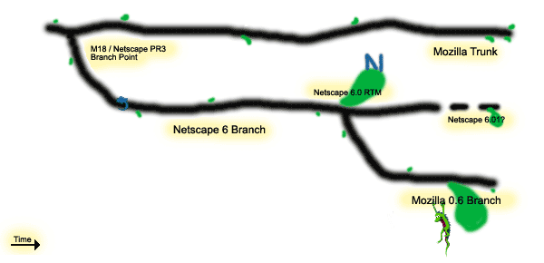

mozilla 開発ロードマップ
Mozilla 開発ロードマップへようこそ。 このドキュメントは Mozilla プロジェクトがたどってきた道のりを簡単に述べた後、 どこへ向かっているか を詳しく述べます。 鍵である『ロードルール』と 進行中である Mozilla-ブラウザ ソース マイルストーンリリース （マイルストーンリリースからはだれでも商用やその他の製品をビルドすることができます） のリリーススケジュールを提案します。 また、Mozilla-プラットフォーム がどのように進化するべきか、 再び 活動上の また『リリースプロセス』の視点からヒントを示します。
よく寄せられる質問に対しての最新情報を取り入れた回答は roadmap FAQ を見てください。
背景 (background)
古いロードマップ は Mozilla プロジェクトを次のものを使って組み直すという 1998年10月の重大な決定を記録していました。 すなわち 新しいレイアウトエンジン（現在は Gecko と呼んでいます）、 クロスプラットフォーム フロントエンド（XPFE）、 XP ツールキット でビルドした 現在は いくつかの XP Apps、 そして スクリプタブル コンポーネント アーキテクチャ（XPCOM と XPConnect）です。 古いロードマップは Mozilla が大幅な進路転換をするのには役立ちましたが、 プロジェクトの進行に道筋を示すのには失敗しました 〜 私の失敗です。弁解の言葉もありません。 プラスの面としては コードに対して そしてコミュニティーに対して 数多くの実証的な手法と開発を規定、促進しました。 しかし それは過ぎた話です。今 私たちには別のロードマップが必要です。
netscape.com として Mozilla をもとにした 商業製品 （訳者注：日本語ページはこちら） の出荷準備を進めるにあたって、いくつかのテクニカルポイントと より企画的かつ計画的に手法を規定する ロードマップが必要です。 Mozilla は新しい機能を必要としていませんし、 特別な『新しい』もしくは『次世代の』モジュールも必要としていません （確かに モジュールの書き換えはされるでしょうし されるべきです。 また 新しい機能もあるでしょうが、 ここで そういったものを引き合いに出すつもりはありません）。 私たちがいまだ現在のアーキテクチャを終わらせようとしていたり 面倒な局面（たとえば ゴミ取りの不足によるメモリーリーク） から目をそらそうとしていたりするときには 『あの次の丘を越えて突き進もう』という使命についてなにか苦言を呈するつもりです。
Mozilla は パフォーマンス、安定性、そして 正確さを必要としています。 私たちは『Mozilla 1.0』プロジェクトの残り10パーセントのところまで来ています。 道はさらに険しくなっていきますが。
目先のツリープラン (near-term tree plan)
私たち staff@mozilla.org は PR3 のための Netscape 6 ブランチを提案します。 このブランチは、そのまま RTM に向かいます。 本流は footprint（訳者注：メモリの消費を押さえることを意味しているようです）、 API の組み込み、そして IBM の BiDi ブランチ、roc の新しい ビューマネージャ、 ActiveState DOM スクリプティングサポート などを含む その他の修正に取り組み続けます。 どの種の変更が本流に入るのか、いつ、だれが決めるのかというルールは 後述の 新しいマイルストーン と プロジェクトマネージメント の項目に 念入りに作られています。
Netscape 6 ブランチのチェックインルールは netscape.com によって定義され、 phil@netscape.com からの メッセージ で明確にされています。 ブランチにおけるこれらのルールにしたがわない人は CVS アクセスを失うリスクを負います。 （mozilla.org が cvs.mozilla.org やほかのあらゆる mozilla.org CVS サーバ上の ベンダーブランチの背後の究極の権威者であり、そうでなければならないからです。）
協力者がブランチの変更をコミットする場合に mozilla.org がお願いしたい唯一のことは 本流に対してもただちに同じ更新をしてほしいということです。 ただし 短期的な解決法のために 本流に対して適用するのが不適切である場合を除きます。 （この場合は 長期的な解決法をできるだけ早く 本流にコミットをするべきです。 それまでの間は 長期的な解決法がない ということをオープンなバグとして追跡するべきです。） 本流の更新なしには、モジュールオーナーやほかのブランチの協力者は リスクをともなってオーナーシップを本流におくでしょう。 netscape.com はこのガイドラインに基本的には同意しています。 （例外はあるかもしれません。 出たとこ勝負でいって ブランチの差分の実装を見守ることもあるでしょう。）
ブランチの詳細 (branch details)
ここに示される Netscape 6 のブランチは PR3 (nsbeta3) ブランチポイント からスタートします。 mozilla.org は Netscape が PR3 をリリースした直後に 本流 にもとづく（mozilla）名義の M18 マイルストーンビルドをリリースします。 （これは 最近の計画変更で、本流の修正を M18 に取込みたいという要求と ブランチにおいて 修正の移植が 意図せず XP ファイルに影響するかもしれないという プレッシャーをやわらげる ためのものです。）
その後、Netscape 6 ブランチには 独断で『Mozilla 0.6』と名付けた オプショナルブランチがあります。 それは netscape.com が 『（製品としての）製造を解禁』（RTM:release to manufacturing） するポイント -- すなわち コードが Netscape 6 へコンパイルされる前に ブランチが変更できる最後のポイントにあります。 このポイントから後のブランチは Netscape 6.01、6.02（仮）などのリリース をサポートするためだけに存在します。
（私が netscape.com にこれらの 6.0n リリースをコミットしている のではないことに注意してください。 Netscape 6 ブランチが RTM の後も存続する理由を述べているだけです。 将来の Mozilla 開発は本流を使って行われます。いかなる長く続くブランチでもなく。）
Mozilla 0.6 ブランチは MathML と ほかの機能拡張や Gecko の内部 API に依存するであろう 『完全でないプラグイン(not-quite-plugins)』 をサポートするため だけ に存在します。 Mozilla ユーザーは タグ付けされたソースを引っ張り、 MathML を含んで 既存の Netscape 6 インストレーションにシームレスに『ドロップイン』 する『交換用の Gecko』をビルドしたいでしょう。
RTM ポイントで MathML や同様の機能拡張がすべて Netscape 6 ブランチソース
とともにうまく動けば Mozilla 0.6 は RTM タグの別名である static タグになり、
CVS ブランチである必要はまったくありません。
そうでなければ、Netscape 6 ブランチからわかれたブランチは
MathML などが 『ドロップイン』の形式で Netscape 6 とともに動くようにするために
必要とされるだろうと信じています。
私たちはそのような Mozilla 0.6 ブランチにおいては
できる限り小さい作業をするつもりです。
コードの検証 (code review)
mozilla.org は netscape.com の助けを得て チェックインを是正するための 全面的なコードの検証を始めています。 私たちは 今まで netscape.com 外の協力者としては waterson@mozilla.org と brendan@mozilla.org だけだった（現在の チェックインの要件 については）コード検証者(code reviewers)である 強力なハッカー の集団をみんな使って コードの品質を上げること、ベストプラクティスをよりよく教えあうこと、 直面していたり潜在しているリグレッションをさけること を願っています。
この新しい reviewers@mozilla.org グループは ブランチにおいて正しい（変更の）交換がなされることを確実にするために（短期的に、極最小のリスク） そして本流において Mozilla や Netscape 6 の後継を保護するために （長期的に、よりよい しかし最小ではない分離、残りの マイルストーンプラン、そして プロジェクトマネージメント の望みのために 少々のリスクは大目にみて） すべてのブランチと本流の変更を検証し、是正しなければなりません。
もちろん、悪い設計の品質について検査することはできませんし またそれをコードレビューすることもできません。 よりよい設計検証と計画のために 設計変更や新設計を提案、検証するには いつもの mozilla ニュースグループが使われるべきです（今日そうであるように）。 mozilla.org の 新しいプロジェクトマネージメント のチームも手伝うことができます。 しかし mozilla.org は基本的にコードをくばり、私たちはコードの品質を向上することが必要です。 それを行うための 私たちが知る最良の手段は、すべてのコード（変更されたそれぞれのファイルで コードの変更部分と まわりの変更されていない部分の両方）を検証するトップハッカーを得ることです。
品質保証 とリリース（qa and release）
leaf@mozilla.org は 本流と（後に Netscape 6 商用ビルドの変造副製品として生じる） Netscape 6 ブランチから Mozilla のナイトリービルドをプロデュースします。 ブランチビルドは MN6 と呼ばれる新しいマイルストーン名のもとに ftp.mozilla.org に現われます。
asa@mozilla.org と IRC の #smoketest、#qa は 日々の動作確認のために Mozilla 本流ビルドを QA します。 asa@mozilla.org は週毎の MN6 を QA し、MathML やほかの機能拡張、完全でないプラグインをテストします。
私たちはブランチと本流の両方を扱うための tinderbox のマシンリソースを確保し Mozilla コミュニティーに本流のナイトリービルドをプロデュースするつもりです。 私たちは netscape.com に ブランチの tinderbox は Netscape 6 の商用ツリーのみをビルドすること を提案し この netscape.com の tinderbox の要件は ブランチが続く間 必要であれば十分だと願っています。 この変更は Netscape 6 の商用 tinderbox グループに 少なくとも Linux を追加することが必要ですが 現在の SeaMonkey マシンのほとんどを本流用に解放しなければなりません。 新しい mozilla.org のビルド実験マシンはなにか違うものをつくり上げることができます。 leaf@mozilla.org はここに詳細を考えています。
私たちは ツリーの終結が必要とされるなら IRC の #mozilla が dmose@mozilla.org や
ほかのスタッフの助けを得て 本流における保安官の役割を担えると信じています。
明示的な保安官名簿が必要なら、dmose@mozilla.org が
beppe@netscape.com、trudelle@netscape.com、ほか とともに一丸となってあたるでしょう。
新しいマイルストーン（new milestones）
M18 の後、そして Mozilla 0.6（Netscape 6 となった Mozilla ソースと同一のものとして使う名前） のスタートとともに mozilla.org は Mozilla-アプリケーションスウィート （少なくともブラウザ と メール／ニュース）のターゲットマイルストーンを bugzilla products の中で次のように設定しなおすことを提案します。
- 混雑と混乱をさけるため、古いターゲットマイルストーン（M1 から M30）は Target Milestone メニューから拒絶されます。 もちろん、古いバグが参照できるように bugzilla のデータベースには残ります。
- mozilla0.6、mozilla0.9、mozilla0.9.1、 mozilla1.0、mozilla1.0.1 の形式の新しいターゲットマイルストーンが 私たちが後で拡張できるように mozilla1.2.1 のような ある区切りまで作られます。 依然として Future のターゲットマイルストーンもあるでしょう。
- これらの新しいターゲットマイルストーンは キーワードでもあることをよく理解してください。 あるバグが mozilla1.0 でフィックスされるべきであると提案するために、 だれでも そのキーワードをバグ（情報）に加えることができます。 バグがそのマイルストーンまでにフィックスされそうかどうかを見分けるために、 だれでもバグの Target Milestone 設定をチェックすることができます。 開発者のターゲットマイルストーンはいつものとおりです。 [nsbeta3+] や [mozilla1.0+] といったステータスはホワイトボードを汚すだけなので無用です。
- Mozilla には バグにターゲットマイルストーン キーワードを加えてコミュニティーの成果をあげるだけでなく 適切に新しいマイルストーンをターゲッティングして 分担している開発者を率先する プロジェクトマネージメントも必要です。 詳しくは後述の プロジェクトマネージメント の項目を見てください。
次の表は新しいマイルストーンのスケジュールを非常におおまかな日程で示しています。 私たちはそれぞれのマイルストーンをいくぶんずらしがちですが、 四半期毎のマイルストーンを守ろうとしています。 私たちはかたくなに日程通り進めることはしません、さもないと Mozilla コミュニティーはなにかの口実をつけて 『1.0』というバージョン文字にあたいする Mozilla 1.0 をしり込みするでしょう。 しかし 私たちは断固としてレギュラーマイルストーンをプロデュースするつもりです。 時間通りでも そうでなくても 列車は走るのです！
もしあなたが Mozilla の企業の協力者で あなたのスケジュールに 以下に提案されている マイルストーンとうまく連係しないものがあるなら、staff@mozilla.org にメールして よりきめ細かいマイルストーン や 一連のマイルストーンを尋ねてください。 次の Mozilla マイルストーンのために あなたが何週間『ラウンドアップ』に立てるか 調整と早急な確認を試みます。
| 2000年 | 2001年 | ||||||||
|---|---|---|---|---|---|---|---|---|---|
| 10月 | 以降 | 第1四半期 | 第2四半期 | 第3四半期 | 第4四半期 | ||||
| M18 | mozilla0.6 | mozilla0.9 | mozilla0.9.1 | mozilla1.0 | mozilla1.0.1 | mozilla1.1 | mozilla1.1.1 | mozilla1.2 | mozilla1.2.1 |
Mozilla 開発者 とりわけ Mozilla コードにもとづく商業製品をリリースしようと計画している協力者が レギュラーマイルストーンに期待することができるのは重要です。 開発者は 最初に（たとえば）mozilla1.1 にターゲットされていた作業がずれるかどうか、 その作業が mozilla1.2 の列車に飛び乗ることができるか （それまで 標準ビルドに組み込まれずに残っていたり #ifdef で外されていたり CVS ブランチにあったりしていて） を知る必要があります。 私たちは 前年をかけて得られた経験にもとづいて 3カ月サイクルが現実的であり、 プロジェクトが 意味深い新しい開発、安定化、改良をおこなって切り上げるのに ほどよく短い と信じてます。
私たちが 6週間毎に行おうと願っている mozilla1.1.1 や 同様の『中間』マイルストーンは 公正さをチェックするマイルストーンで、 だれもが 次の四半期マイルストーンがどのくらい進歩しようとしているか を評価するのに役立つものです。 6週間周期が長過ぎると思ったときは、mozilla1.1.2 や そのような 安定化ミニマイルストーンを追加して 4週間周期にスイッチすることもありえます。 私たちは メジャーマイルストーンの間の そのようなマイナーマイルストーンを ３つ以上は想定していません。
私たちはコンポーネント化を歓迎しますが、すべての Mozilla ソースがいっしょにビルド
されなければならないケースが一般的です。
API が成熟して私たちがそれらをフリーズするのにともない、
コンポーネントオーナーが独自のマイルストーンスケジュールを開発し
独自の CVS タグとソース（とさらにはバイナリー）リリースによってコンポーネント
を供給することを願います。
それが Mozilla をスケールアップし、過度のコンポーネント間依存をさける 唯一の方法です。
しかし私たちはいまだ
mozilla1.5 が 十分にテストされたコンポーネントを 安定したインタフェースによって
たがいにつないだ 単なる組み合わせであるときでも
mozilla.org がクロスコンポーネントマイルストーンや『ブランド』の成果をリリースすること
をリードしていると予見しています。
それはハッピーな日になるでしょう！
プロジェクトマネージメント
助けを必要としているバグに対して タイムリーなかたちで 開発者をふりむけるため、 リスクを減らすため、 そして Mozilla にもとづく商業プロジェクトが製品リリースを管理することを助けるために mozilla.org はプロジェクトマネージャ drivers@mozilla.org のグループを作ることを提案します。 （私たちは "project managers" よりも運送の含蓄を込めて "drivers" のような短い名前をえらびます）
私たちが考えているのは次の人たちです：
- David Baron, dbaron@fas.harvard.edu
- Chris Blizzard, blizzard@redhat.com
- Asa Dotzler, asa@mozilla.org
- Brendan Eich, brendan@mozilla.org
- Warren Harris, warren@netscape.com
- Robert O'Callahan, roc+moz@cs.cmu.edu
- Tim Rowley, tor@cs.brown.edu
私たちはこれらの仲間が用いる処理に過度のものを求めるのではなく 彼らがたずさえてくるテクニックを信じようとつとめます。 私たちは 同数（に別れて競合すること）をさけるために 奇数人（多すぎず、ラッキーで、すばらしい７人）を選びました。 私たちは モジュールオーナーに期待するのと同様に （プロジェクトマネージメント『モジュール』をあずかる）プロジェクトマネージャー（drivers）に 責任感と コミュニティーの満足感を期待します。
最低限、私たちは プロジェクトマネージャーが 四半期毎のスケジュールにしたがってバグをソートするのに 新しい bugzilla のターゲットマイルストーンキーワードを使うこと、 Mozilla コミュニティーの望みを考慮して 秩序立ってターゲットバグをフィックスするために 開発者を配置したり募集したりすること を求めます。 プロジェクトマネージャーはもちろん それぞれのマイルストーンの意図やそれに類する内容、 マイルストーンを定めるのに使ったスケージュールの根拠を 公開文書やニュースグループへのポストで明らかにしなければいけません。
それ以上のことを 私たちはプロジェクトマネージャーに委任します。
私たちはそうとうな量の努力を 依存性を確かめること、スケジュールを修正すること、
そして開発者をコーディネートすることに費やすことになりそうです。
更新履歴（document history）
第３稿
バージョンナンバーを 1.0、1.1、1.2 におちつけました。必要に応じて 1.0.1、1.1.1 といった中間マイルストーンもあります。 M18 を ブランチの説明図やマイルストーンの表に示すとともに、説明文で言及。 Ian Hickson のよりよい PNG のブランチ説明図を使用。
第２稿
バージョンナンバーが現実的な数字でなかったのを 整数のペアにしました （指摘してくれた ianh@netscape.com に感謝します）。 表の背景色をあまり暗くないグレイに直しました。
第１稿
古いロードマップは役目を終えました。 新しいマイルストーンスケジュール、コード検証、そして プロジェクトマネージメントを提案。